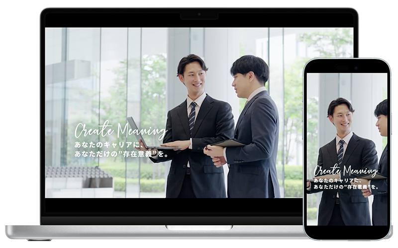
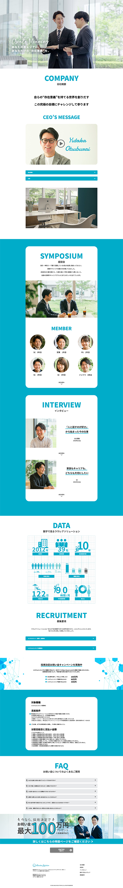
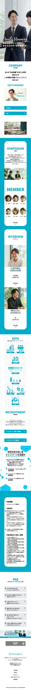

株式会社ラウレアソリューション様 採用LP
- 学校課題
- #グループ制作
- #WEBサイト(デザイン)
- #コンペ作品

| 概要 | 職業訓練校にて、株式会社ラウレアソリューション様の採用LPサイトをグループとなって制作しました。 |
|---|---|
| デザイン担当箇所 | 「ファーストビュー」と「数字で見るラウレアソリューション」以降のデザインを担当しました。 |
| 目的 | ・ホームページからの応募数が少ない ・求人広告の出稿コストが高い ・応募者の多くが未経験者で、経験者の確保が難しい 上記課題をラウレアソリューション様は抱えていたことから、 「SES営業経験者を積極的に募集していることを伝え、経験者からの応募数を増やすこと」を目的としました。 |
| ターゲット | SES営業経験者、もしくはSE経験者。 首都圏在住の25歳〜45歳の営業経験者で、特に男性を想定。 |
| 制作にあたって | ラウレアソリューション様の「ゆるく自発性を重んじる」スタンスを踏まえ、 軽やかで自由な印象を意識しつつ、チープに見えないよう背景や装飾で独自性を加えました。 情報量の多いページでも快適に閲覧できるよう、アコーディオンやジャンプ率の高い構成でセクションの区切りを明確にしています。 |
| デザイン | メインカラーには青と緑を混ぜた鮮やかな水色を採用。 白で清潔感と爽やかさを、グレーで落ち着きをプラスし、ラウレアソリューション様の特徴である BtoBの堅実な事業と調和する信頼感あるデザインに仕上げました。 |
| 制作期間 | 企画・ワイヤーフレーム 1日 デザイン 4日間 |
| 使用したツール | Photoshop / Illustrator/ Figam |

